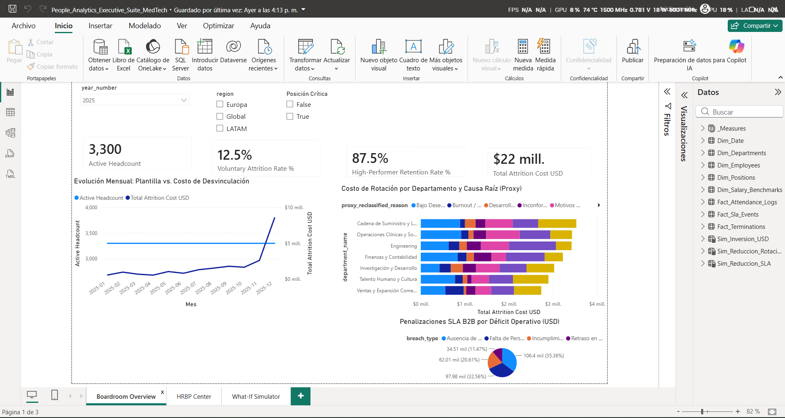
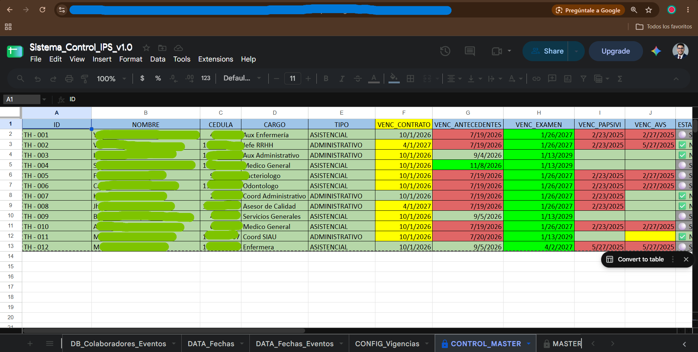
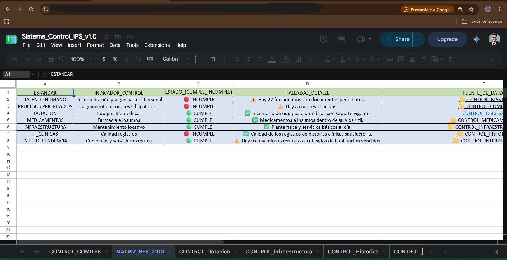
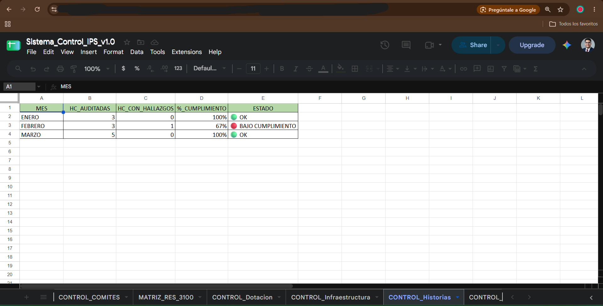

Workforce Dynamic Lens
Suite analítica, prescriptiva y financiera de People Analytics con simulación en tiempo real.

Vista Ejecutiva C-Level: Análisis de fricción operativa, correlación causa raíz por departamento y exposición de $22M USD en costos de rotación y penalizaciones por incumplimiento de SLAs corporativos.
Diseño de esquema relacional en estrella (Kimball) con tablas de hechos (Fact_Attendance_Logs, Fact_Sla_Events, Fact_Terminations) y dimensiones conformadas estructuradas en PostgreSQL.
Control granular de vigencias y transiciones de roles/departamentos a lo largo del tiempo, garantizando auditoría fidedigna de cambios organizacionales sin pérdida de contexto histórico.
Modelado matemático de métricas complejas: Bradford Factor cuadrático, Compa-Ratio de compensación salarial, amortización de penalizaciones de SLA y análisis financiero What-If.
Sistema Automatizado de Auditoría & Notificación para IPS
Pipeline en Python para auditoría normativa (Resolución 3100), generación dinámica de actas Word (.docx) y despacho de alertas gerenciales por correo.



Capa de Ingesta & Reglas de Negocio: Estructura relacional automatizada para monitorear el personal asistencial y administrativo bajo los estándares obligatorios de habilitación en salud (Resolución 3100).
Módulo de lectura de planillas institucionales, validación cruzada de cédulas, fechas de vencimiento de habilitaciones y detección de inconsistencias lógicas.
Inyección de datos calculados dentro de plantillas formales de auditoría, formateo condicional de estados críticos y estructuración de tablas gerenciales.
Empaquetado MIME multipart con cuerpo en HTML responsive, adjuntos dinámicos autenticados y logging de ejecución para trazabilidad en producción.
Competencias Técnicas & Metodologías
Ecosistema tecnológico enfocado en análisis de datos, consultas SQL y automatización.
SQL & Business Intelligence
- SQL & PostgreSQL: Joins, Agregaciones, Vistas, DDL/DML
- Power BI (Modelado de Datos & DAX Avanzado)
- Modelado Dimensional Kimball (Star Schema)
- Slowly Changing Dimensions (SCD Tipo 2)
- Parámetros & Simulación What-If
Software & Automatización
- Python 3.x (Programación Modular & OOP)
- Pandas, OpenPyXL (ETL & Transformación)
- python-docx (Generación de Reportes)
- Automatización de Correo SMTP & HTML
- Git & GitHub Version Control
Negocio & People Analytics
- Cuantificación Financiera de P&L & Retención
- Bradford Factor & Diagnóstico de Ausentismo
- Equidad Salarial & Compa-Ratio
- Habilitación en Salud (Norma Res. 3100)
- Análisis y Desarrollo de Software (ADSO)
¿Por qué mi perfil destaca ante equipos de datos y tecnología?
A menudo existe una brecha entre los profesionales que dominan el código y aquellos que entienden los dolores reales del negocio y sus estados financieros. Mi propuesta de valor radica precisamente en cerrar esa brecha:
No diseño tableros vacíos: construyo modelos analíticos que demuestran ahorros reales en millones de dólares, optimización de nómina y retorno de inversión claro para directores y vicepresidencias.
Aplico consultas en SQL y PostgreSQL para extraer y estructurar datos, desarrollo scripts en Python para validaciones y automatizaciones operativas, y diseño tableros ejecutivos en Power BI que respaldan decisiones de negocio estratégicas.
¿Conversamos sobre cómo aportar valor a tu equipo?
Estoy abierto a entrevistas técnicas, oportunidades laborales y proyectos de consultoría en People Analytics, Business Intelligence y Automatización con Python.